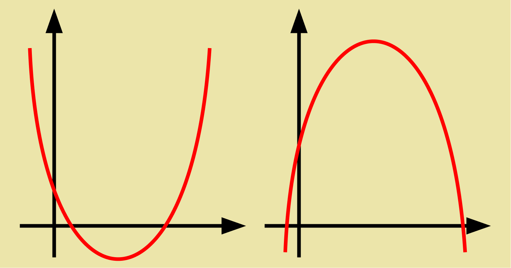

como é uma função de segundo grau voce vai olhar para o valor do coeficiente "a", se for a > 0(maior que zero)
a parabólica aponta para cima
mas se "a" for a < 0( menor que zero) a parabólica vai apontar para baixo.
2° Passo:Raízes
No segundo passo você vai fazer a formula de bhaskara para obter as raízes, elas serão os cortes no eixo
X.
3° Passo: corte no y
No terceiro passo você vai ter que descobrir o valor do y que é o corte no eixo Y,você pode calcular a
baskhara com "c"= 0 ou pode pegar o valor de "c" direto,
Eu particularmente prefiro pegar o valor de "c" direto porque é mais rápido mas em caso de dúvida
calcula.
4 °Passo: Vértice
Nesse passo você vai ter que usar as fórmulas Xv=-b/2.a , Yv=-Δ/4.a depois de calcular isso pode montar
o gráfico.
o Gráfico vai ficar mais ou menos assim

Link da imagem: https://matematicabasica.net/wp-content/uploads/2019/02/funcao-quadratica-7.png